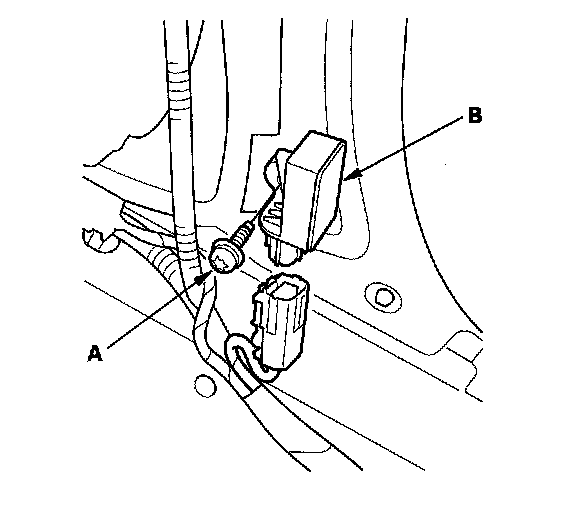
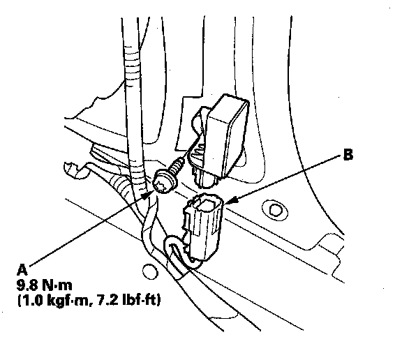

Side Impact Sensor (First) Replacement
Side Impact Sensor (First) ReplacementNOTE: Review the seat replacement procedure before doing repairs or service.
Removal
1. Disconnect the negative cable from the battery, and wait at least 3 minutes before beginning work.
2. Disconnect the appropriate side airbag 2P connector.
3. Remove the front seat assembly.
4. Remove the front door sill inner trim:
- 2-door
- 4-door
5. Remove the lower B-pillar lower trim panel.
6. Disconnect the floor wire harness 4P connector from the side impact sensor (first).

7. Using a TORX T30 bit, remove the TORX bolt (A), then remove the side impact sensor (first) (B).
Installation

1. Install the new side impact sensor (first) with the TORX bolt (A), then connect the floor wire harness 4P connector (B) to the side impact sensor (first).
2. Reconnect the negative cable to the battery.
3. After installing the side impact sensor (first) confirm proper system operation: Turn the ignition switch ON (II); the SRS indicator should come on for about 6 seconds and then go off.
4. Reinstall all removed parts.